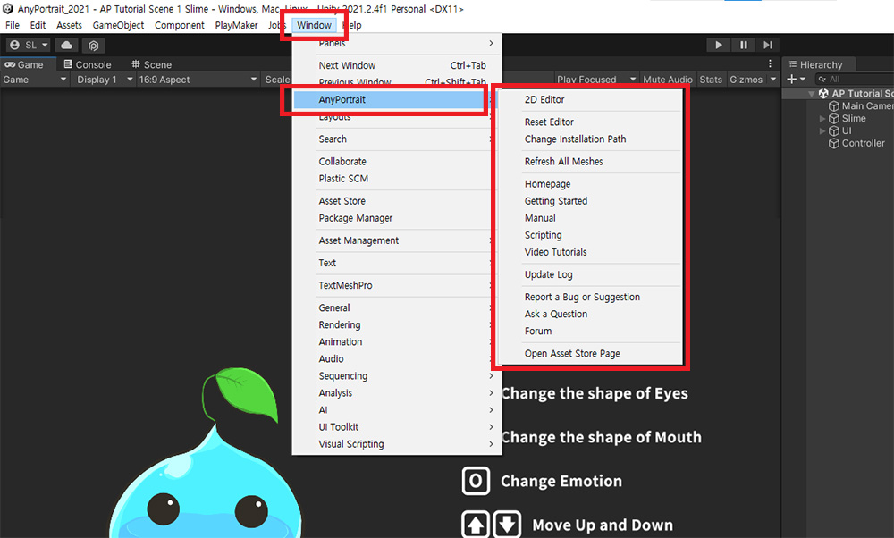
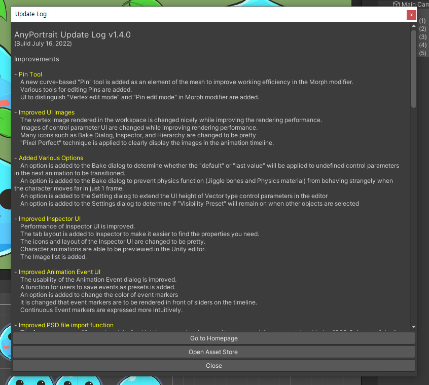

AnyPortrait > マニュアル > UnityのAnyPortraitメニュー
UnityのAnyPortraitメニュー
1.4.0
「Unity Editor」で「AnyPortrait」のメニューを選択すると、かなり多くの項目が表示されます。
「AnyPortrait」エディタを開く機能に加えて、ユーザーに情報を提供するなどの項目があります。

「Unity Editor」の「Window > AnyPortrait」メニューを選択すると、上記のように複数のサブメニューを表示できます。
各項目は次のとおりです。
- 2D Editor : AnyPortrait エディタを開きます。
- Reset Editor : エディタに致命的な問題が発生して開けない場合は、この項目をクリックしてエディタのデータをリセットします。
- Change Installation Path : AnyPortrait パッケージがデフォルトパス以外の場所にインストールされている場合は、この項目をクリックしてインストールされたパスを変更します。 （関連ページ）
- Refresh All Meshes : 現在シーンに配置されているapPortraitキャラクターのメッシュを一括更新します。
- Homepage : RainyRizzle チームのホームページを開きます。
- Getting Started : 入門者のチュートリアルページを開きます。
- Manual : AnyPortrait機能を紹介するマニュアルページを開きます。
- Scripting : スクリプト関数の説明を表示できるAPIページを開きます。
- Video Tutorials : 動画で制作されたチュートリアルページを開きます。
- Update Log : 現在のバージョンの変更点が表示されます。
- Report a Bug or Suggestion : バグが見つかった場合、または提案がある場合に連絡を送信できるページを開きます。
- Ask a Question : 気になる点について私たちのチームにすぐに質問できるページを開きます。
- Forum : 質問や必要な点、発見したバグなどを私たちのチームやユーザーと共有できる掲示板を開きます。
- Open Asset Store Page : アセットストアでAnyPortraitページを開きます。
すべてのメッシュを更新

AnyPortraitのメッシュはリアルタイムで生成された一時データなので、もしプレハブや他のシーンからコピーして配置した場合、上記のように見えません。
(1) 現在6つのキャラクターがシーンに存在しますが、(2) シーンでは何も見えません。

(1) Unity Editor で、AnyPortrait のメニューから「Refresh All Meshes」を選択します。

現在のシーンで見つかったキャラクターのメッシュを更新するかどうかを尋ねるダイアログが表示されます。
（無効になっているキャラクターは除外されます。）

上記のように、すべてのキャラクターのメッシュが再更新され、シーンで見ることができます。
ドキュメントページを開く

「Homepage、Getting Started、Manual、Scripting、Video Tutorials」の各項目は、AnyPortraitを使用するために必要な情報を提供するWebページを開きます。
更新の変更点を確認

「Update Log」項目を開くと、更新直後に表示されたダイアログを再度開くことができます。
新しいバージョンでは、どのような点が追加され、改善されていることを確認してください！
お問い合わせ

「Report a Bug or Suggestion、Ask a Question、Forum」の項目は、バグが見つかった場合や質問があった場合に問い合わせるページを開きます。
私たちに直接連絡したり、他のユーザーとフォーラムで共有したりできます。
私たちはあなたにできるだけ早く助けるために常に努力しています。
ちょっとした気になる点でも気軽にご連絡ください！